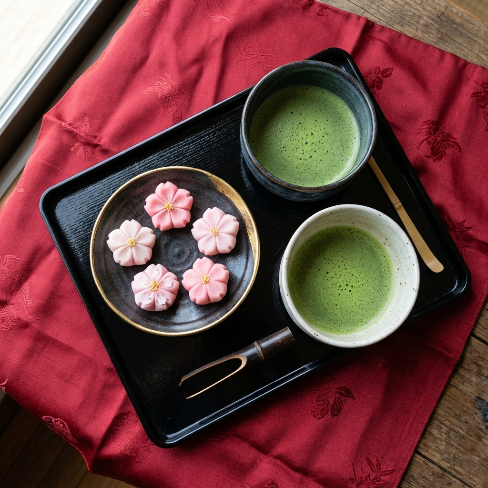

Spring
March — May
Sakura Blossom Trails
Cherry blossoms frame temple gardens, river paths, and historic streets in a soft pink glow.

A curated journey through the soul of Japan. Beyond the map, where rituals breathe and silence speaks.


"Beyond the crowds lies a Japan of quiet rituals, artisan paths, and landscapes that hold their breath just for you."
We believe travel is not a checklist. Japan rewards those who pause — who watch the steam rise from a bowl of ramen at dawn, who sit long enough in a temple garden to hear the silence. Our journeys are crafted for the curious soul, not the rushed tourist.


Cherry blossoms frame temple gardens, river paths, and historic streets in a soft pink glow.

Long evenings, lantern-lit streets, and mountain retreats full of summer ritual and colour.

Crimson and amber maples surround ancient shrines, creating one of Japan’s most unforgettable seasons.

Crisp air, steaming onsen, and quiet snowy temple gardens for peaceful, intimate winter travel.
Japan's cuisine is an art form as precise and meditative as its temples. Each prefecture offers its own dialect of taste — from the delicate kaiseki of Kyoto to the bold street food of Osaka's Dotonbori. We guide you to the tables where memory is made.





Crafted itineraries — speak with a Japan specialist today